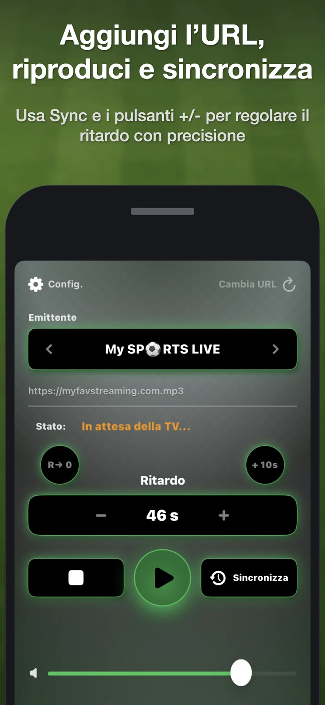
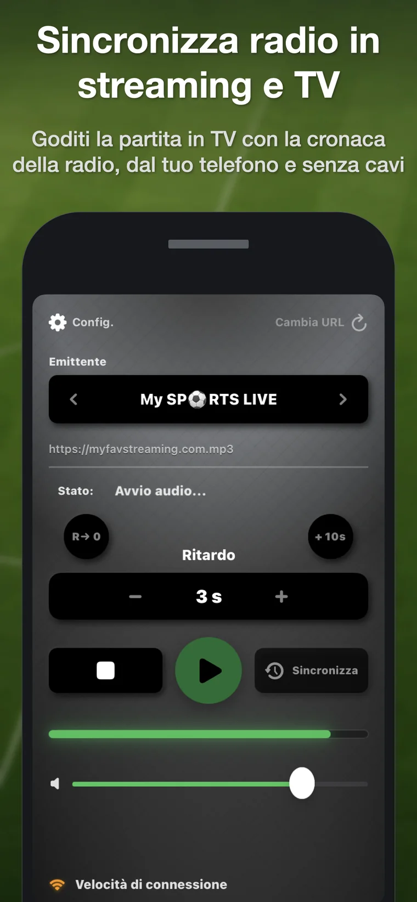
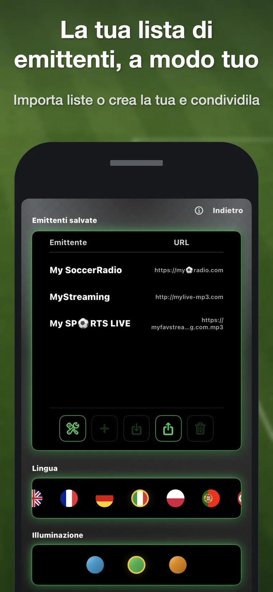

1. Aggiungi un’emittente
Aggiungi un URL diretto compatibile o importa una lista TXT, M3U o JSON.
Soccer RadioTv Sync ritarda uno stream radio online compatibile direttamente su iPhone, così la radiocronaca coincide con le immagini TV quando la latenza dello streaming fa arrivare prima la radio.

Quando una trasmissione sportiva arriva sul televisore tramite streaming, le immagini possono comparire diversi secondi dopo la radiocronaca. Si sente il gol prima di vederlo. Soccer RadioTv Sync recupera l’esperienza classica di guardare la partita in TV ascoltando il proprio radiocronista preferito.
Aggiungi un URL diretto compatibile o importa una lista TXT, M3U o JSON.
Tocca Sync quando senti un momento riconoscibile alla radio, poi di nuovo quando appare in TV.
L’app calcola automaticamente il ritardo. Usa + e – per regolarlo con precisione.
Normalmente bastano solo 10–40 secondi, ma l’app supporta fino a 300 secondi.
Continua ad ascoltare con l’iPhone bloccato o mentre usi altre app.
Cambia server della stessa emittente se lo stream radio attuale è in ritardo rispetto alla TV.
Pensata per una riproduzione stabile, con basso consumo di risorse e senza complicazioni.
Crea, importa, esporta e condividi liste TXT, M3U e JSON.
Localizzata per un pubblico internazionale, tra cui italiano, inglese, spagnolo e tedesco.
Esistono ricevitori radio con ritardo, ma richiedono hardware aggiuntivo e in genere costano molto di più. Le soluzioni fai-da-te con computer, cavi o VLC possono funzionare, ma sono scomode durante una partita. Soccer RadioTv Sync funziona sull’iPhone che hai già con te e utilizza stream internet: sia emittenti tradizionali che trasmettono anche online, sia radio esclusivamente digitali senza frequenza AM o FM.
La versione attuale non include emittenti preinstallate. Devi aggiungere un URL diretto compatibile o importare una lista. Questo mantiene l’app internazionale e indipendente da una singola emittente. È in sviluppo un sistema più semplice per trovare le radio.


Sì. Soccer RadioTv Sync riproduce uno stream radio online compatibile e applica un ritardo regolabile direttamente su iPhone.
Tocca Sync quando senti un momento riconoscibile alla radio e toccalo di nuovo quando appare in TV. L’app calcola il ritardo, che puoi regolare con + e –.
Funziona con URL diretti di streaming compatibili. La versione attuale non include emittenti, quindi devi aggiungere un URL o importare una lista.
Funziona con stream internet. Sono incluse emittenti tradizionali con stream online e radio digitali senza frequenza AM o FM.
È pensata per le situazioni in cui la radiocronaca arriva prima delle immagini TV, cosa comune quando la televisione ha latenza di streaming.
No. La versione attuale è un acquisto una tantum, senza pubblicità e senza account.
Soccer RadioTv Sync è nata da una frustrazione molto concreta. Il suo creatore, appassionato di calcio da sempre, voleva continuare a guardare le partite in TV ascoltando il radiocronista che seguiva da oltre 30 anni. Con il passaggio allo streaming, l’immagine arrivava spesso in ritardo e la radio anticipava le azioni decisive. Il primo prototipo privato fu sviluppato su un MacBook del 2013. Quando ne parlò con alcuni amici, l’idea sembrò un po’ da nerd, ma anche qualcosa che sarebbe stato fantastico poter avere sull’iPhone. Cercando nei forum e sui social, però, emerse che non era una stranezza personale: la stessa frustrazione esisteva in molti Paesi e in molti sport. Cambiano squadre, emittenti e lingue, ma il problema è lo stesso. Da quello stesso nucleo di sincronizzazione nacque poi la versione commerciale per iPhone: Soccer RadioTv Sync.